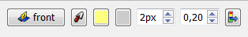
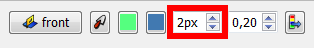

The line color and line width of Draft objects (and any other FreeCAD object) can easily be changed in the Draft module.

On the Command bar , a series of buttons displayed, including three for lines : 
 Gives color to the line (edge).
Gives color to the line (edge).
 Gives background color (face) to the form.
Gives background color (face) to the form.
 Gives the thickness line (edge).
 Gives all the parameters of style bjects selected.
Gives all the parameters of style bjects selected.
{kind=link}
{kind=link}
On the Draft command bar, you will see three buttons: a linewidth setting, a linecolor button, and an "apply" button. If objects are selected when you change those values, they will receive automatically the new values. If no object is selected, the changes you make will apply to objects you will create later. At any moment, you can hit the "apply" button to apply current settings to selected objects. You can also do that from the tree's context menu. If a group is selected, the settings will be applied to all objects in the group.
If you would like to change the face color of filled objects, you can do it via the properties window.
See also Draft Apply  .
.